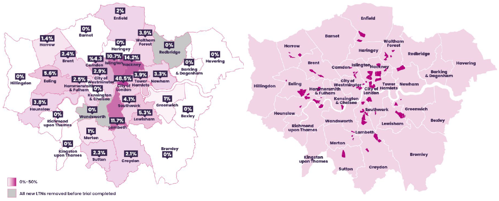

On this website, you could explore the transition of travel mode in London in four parts.
In each part, there are related policies which help you to understand the interactive maps and charts.
Overview
In this part, you will have an overview of the transportation methods in London through the decade (2010-2021).
Firstly, We will show you the road travel density in London from 2010-2019.
Start Exploring!
Trips by Purpose and Main Mode
Here is a chart shows the trips by purpose and main mode in England in 2019.
The car/van is main mode for all travel purposes. People prefer to walk for education or personal business reasons.
For business purpose, people always choose car and rail for convenience.
London Public Transport Journeys by Type
How people go out?
Are there any changes during the pandemic period (COVID-19)?
Does the policy take a role on the changes?
The pie charts show the percentage of London public transport by type.
The first pie chart uses data from 2010 to 2021. The second one shows the data under the pandemic (COVID-19).
The data from 2020 (under pandemic) are much lesser than common data before, so two y-axes are much easier to understand in this line chart. The trend from March 2020 changes right fit the lockdown policy timeline.
Energy Consumption
The amount of CO2 road vehicles emit directly related to the amount of fuel they consume. A line chart is used in order to identify the total fuel consumption trends by different transports from 2005 to 2018. A map shows the distribution of road CO2 emission in Greater London based on the data from 2008 to 2020 and its forecast until 2030.
Start Exploring!
Total fuel consumption
Two government policies to address the road CO2 emission problem
One is expanding the areas for the Low Emission Bus Zone in London. Another one is making the Ultra Low Emission Zone effective on most vehicles across London.Both policies could significant reduce the CO2 emission every year.
Private transportation
The primary goal for London is to achieve carbon netral by 2050.
According to the mayor's transport strategy, the first step is to reach 80% of all trips in London to be made on foot, by bycycle or using public transport.
The two maps below shows the Licensed vehicles and public charge points in London.
Start Exploring!
Public Transportation
In the public transport section, we will firstly look at public transport accessibility index and then mainly focus on cycling.
This is because rail transport does not produce significant changes (e.g. a new line is opened) for a period of less than 5 or 10 years. It therefore has less impact on people's choice of travel mode than the shared cycles, which are expanding rapidly. Also, Infrastructure development will also drive people to choose greener modes of travel which leads to the visualisation below.
Start Exploring!
Policy Inspiration

Maps for new LTNs introduced in London, March-September 2020
Low traffic neighbourhoods (LNTs) has been introduced in London since the 1970s, and more are emerged to citizens in early 2020 with widely welcome. The aim of LNTs is to: reduce traffic and road danger, encourage people to walk or cycle rather than travel by car, and improve the living quality of communities etc.